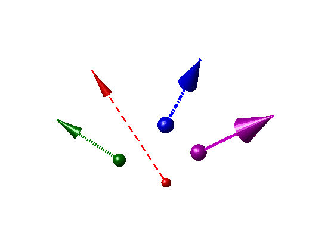
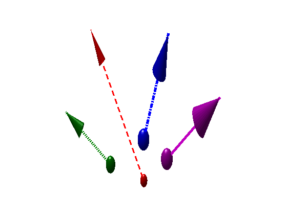
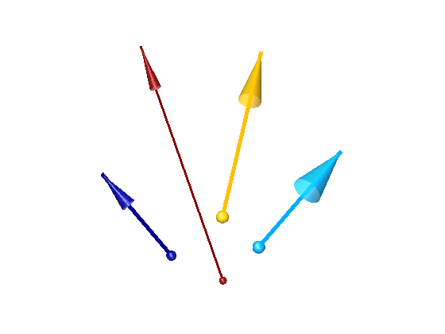

ARROW3
EXAMPLES (R13)
Two-Dimensional
Quiver Plots
Example 1. (cf.
Joukowski
Airfoil Transformation)
t=10*pi/180; u=0.1; v=0.1; r=1.1; tol=8e-2;
s=u+i*v; k=2*r*sin(t); w=exp(i*t);
[x,y]=meshgrid(-2.5:0.1:3.5,-3:0.1:3);
z=x+i*y; z(abs(z-s)<r-tol)=NaN;
f=w*z+exp(-i*t)*r^2./(z-s)+i*k*log(z);
a=0:0.1:2*pi; zc=r*(cos(a)+i*sin(a))+s;
c1=-1.5; c2=2.5; c3=c2-c1;
c=contour(x,y,imag(f),c1:c3/16:c2);
set(gca,'color',0.5*[1 1
1])
hold on, daspect([1 1
1])
fill(real(zc),imag(zc),'y'),
colorbar
map=get(gcf,'colormap');
domain=0:1/(size(map,1)-1):1; m=1;
while m<length(c),
n=m+c(2,m);
if c(2,m)>9,
p=c(:,m+1:n)';
if
p(end,1)>p(1,1), p=flipud(p); end
ndx=10:10:length(p);
p2=p(ndx,:); p1=p(ndx-3,:);
cc=interp1(domain,map,(c(1,m)-c1)/c3);
set(gca,'ColorOrder',cc)
arrow3(p1,p2,'0o',0.8)
end, m=n+1;
end, hold off
Example
2. (cf.
Quiver)
[x,y]=meshgrid(-1:1/21:1);
z=x.*exp(-x.^2-y.^2);
[c,h]=contour(x,y,z);
set(h,'EdgeColor',0.45*[1
1 1])
ndx=1:3:length(x);
x=x(ndx,ndx); y=y(ndx,ndx); z=z(ndx,ndx);
[u,v]=gradient(z,1/7);
p1=[x(:),y(:)]; u=u(:); v=v(:);
m=abs(u+i*v); % gradient
magnitude
daspect([1 1 1]), set(gca,'color',0.3*[1
1 1])
hold on, colormap hot, scale=0.4;
arrow3(p1,p1+scale*[u,v],'|',min(1.25*m,0.85))
hold off, h=colorbar;
set(h,'YTickLabel',num2str(str2num(get(h,...
'YTickLabel'))/scale))
Example
3. (cf.
Two-Dimensional
Quiver Plots)
[x,y,z]=peaks(-2:0.05:2);
contour(x,y,z,10); h=gca;
ndx=1:4:length(x);
x=x(ndx,ndx); y=y(ndx,ndx); z=z(ndx,ndx);
[u,v]=gradient(z,0.2);
p1=[x(:),y(:)]; u=u(:); v=v(:);
m=abs(u+i*v); % gradient
magnitude
hold on, daspect([1 1
1]), scale=0.025;
arrow3(p1,p1+scale*[u,v],'|',0.9*m/max(m))
hold off, title('Dual Colormap')
h1=colorbar; h2=copyobj(h1,gcf);
set(h,'color',0.4*[1 1
1],...
'position',get(h,'position')+[0.05 0 0 0])
%
----------------------------------------------------- Right Colorbar
p=get(h1,'position');
set(h1,'position',[0.87,p(2),0.05,p(4)],...
'YTickLabel',num2str(str2num(get(h1,...
'YTickLabel'))/scale))
% freeze labels
map=colormap; cdata=reshape(map,size(map,1),1,3);
set(get(h1,'children'),'cdata',cdata)
% freeze colors
set(get(h1,'title'),'string','Gradient')
%
------------------------------------------------------ Left Colorbar
caxis auto, colorbar,
colormap autumn
set(h2,'YAxisLocation','left',...
'position',[0.08,p(2),0.05,p(4)])
set(get(h2,'title'),'string','Contour')
Three-Dimensional
Quiver Plots
Example 4. (cf.
Quiver3)
[x,y]=meshgrid(-2:0.25:2,-1:0.25:1);
z=x.*exp(-x.^2-y.^2);
surf(x,y,z,'EdgeColor','none')
axis([-2.5 2.5 -1.5 1.5 -1 1]), daspect([1 1 1])
set(gca,'CameraViewAngle',7)
[u,v,w]=surfnorm(x,y,z);
p1=[x(:),y(:),z(:)]; N=[u(:),v(:),w(:)];
hold on
arrow3(p1,p1+0.5*N,'1.5_b')
hold off, colormap spring
light('position',[-1 -1
-1],'style','local')
light('position',[0 1
1]), lighting gouraud
Example 5. (cf.
Three-Dimensional
Quiver Plots)
vx=2; vy=3; vz=10; a=-32; t=(0:.1:1)';
x=vx*t; y=vy*t; z=vz*t+1/2*a*t.^2;
r=[x,y,z]; v=gradient(r')';
axis([0 3 0 4 -10 2]), pbaspect([2 1 1])
hold on, grid on, view([70 18])
arrow3(r,r+v,'b',1.1)
hold off
Feather
Plots
Example 6. (cf.
Feather)
theta=(-90:10:90)'*pi/180;
n=length(theta); p1=[1:n;zeros(1,n)]';
r=2*ones(n,1); [u,v]=pol2cart(theta,r);
plot([1 n],[0 0],'r')
axis([0 20 -2 2]), daspect([8 2 1])
hold on, grid on
arrow3(p1,p1+[u,v],'r',0.8)
hold off
Example
7. (cf.
Plotting
Complex Numbers)
t=(0:0.5:10)'; s=0.05+i; Z=exp(-s*t);
n=length(Z); p1=[1:n;zeros(1,n)]';
plot([1 n],[0 0],'b')
axis([0 22 -1 1]), daspect([8 1 1])
hold on, grid on
arrow3(p1,p1+[real(Z),imag(Z)],'b',0.65)
hold off
Compass
Plots
Example 8. (cf.
Compass
Plots)
wdir =[45 90 90 45 360 335 360 270 335 270 335 335];
knots=[ 6 6 8 6 5
9 8 8 9 10 14 12];
[x,y]=pol2cart(wdir*pi/180,knots);
polar(0,15), axis(15.9*[-1 1 -1 1])
hold on
arrow3(zeros(length(x),2),[x',y'],'r',1.25)
hold off
Example
9. (cf.
Compass)
Z=eig(randn(20)); m=abs(Z);
R=ceil(max(m)); r=R+0.3;
polar(0,R), axis(r*[-1 1 -1 1])
hold on
arrow3(zeros(length(Z),2),[real(Z),imag(Z)],'b',1.75*m/R)
hold off
Reference
Frames
Example 10.
p=[4 2 1]; axis([-6 6 0 5 -1 1])
pbaspect([2 1.5 1]), view(55,15)
hold on
arrow3(repmat([p(1:2),0],4,1),...
[0 p(2) 0;p(1) 0 0;p;0 0 0],'--o',0,0,0.5)
arrow3(zeros(3),diag([7,5,1]),'o')
arrow3([0 0 0],p,'2.5s',1.5,[],0)
hold off, axis off, camlight left
set(gca,'CameraViewAngle',4)
text(7.1,0,0,'X'),
text(0,5.05,0,'Y')
text(0,0,1,'Z','VerticalAlignment','bottom',...
'HorizontalAlignment','center')
Example 11. (cf.
Frenet)
z=(0:2/99:2)'; t=2*pi*z; r=2+z;
x=r.*cos(t); y=r.*sin(t);
R=[x,y,z]; dR=gradient(R')';
m=repmat(sqrt(sum(dR.*dR,2)),1,3);
T=dR./m; dT=gradient(T')';
m=repmat(sqrt(sum(dT.*dT,2)),1,3);
N=dT./m; B=cross(T,N);
plot3(x,y,z,'color',0.5*[1
1 1])
axis([-4 4 -4 4 0 2.5])
hold on, grid on, pbaspect([1 1 1])
set(gca,'CameraViewAngle',7)
plot3(0,0,0,'r'),
plot3(0,0,0,'color',[0
0.5 0])
plot3(0,0,0,'b')
legend('Curve','Tangent','Normal','Binormal',2)
ndx=1:4:length(x); R=R(ndx,:);
arrow3(R,R+1.4*T(ndx,:),'r',0.9)
arrow3(R,R+1.4*N(ndx,:),'e',0.9)
arrow3(R,R+0.4*B(ndx,:),'b',0.9)
hold off, view(-50,5)
set(gcf,'renderer','zbuffer')
Named
Colors
Color
Equivalencies
|
|
|
|
Color1
|
|
Blue
|
LightBlue
|
|
aZure
|
Color2
|
|
Evergreen
|
DarkGreen
|
|
Asparagus
|
Color3
|
|
Red
|
Orange
|
|
kumQuat
|
Color4
|
|
Sky blue
|
Gray
|
|
Light gray
|
Color5
|
|
Violet
|
|
Color6
|
|
Pear
|
|
Color7
|
|
Dark gray
|
|
Example 12.
arrow3('colors',0.4)
% 24 named
colors with
44 adjustable shades
Update
(Modify and Restore)
Example 13.
% Arrow3 draws surfaces
that appear to be right circular cones and
% spheres, but arrowheads and
initial point markers retain their
% appearance only so long as the
data aspect ratio remains unchanged.
daspect([1 1 2]), view([-40,24])
axis([-1 4 -1 4 0 6])
hold on, axis off
p1=[0,0,0;2,1,0;2.5,3,0;0,2,0];
p2=[-1,2,6;3,-1,3;2.5,1.5,5;-1,3.5,2];
global LineWidthOrder,
LineWidthOrder=[2,3,3,3];
global ColorOrder,
ColorOrder='rvbe';
w=[3,8,6,4]; h=[9,12,12,8]; ip=[3,5,5,4];
set(gca,'LineStyleOrder',{'--','-','-.',':'},...
'position',get(gca,'position')+[0,0.075,0,0])
arrow3(p1,p2,'o*/',w,h,ip)
hold off
camlight left
Example 13. (a) Original plot
|  |
% Changing the data aspect
ratio distorts the appearance of
arrowheads
% and initial point markers.
daspect([1 1 1])
Example 13. (b) Aspect ratio distortion
|  |
% Restore appearance of
arrowheads and initial point markers.
arrow3('update')
% Modify colors of arrowheads,
initial point markers, and lines to
% conform with magnitude
coloring in the current colormap.
h=arrow3('update','colors');
% Change line style to
continuous.
set(h(strcmp(get(h,'type'),'line')),'LineStyle','-')
% Reduce opacity to 70%.
set(h(strcmp(get(h,'type'),'surface')),'FaceAlpha',0.7)
% Reduce arrowhead width by 25%,
retain arrowhead height, and reduce
% initial point marker diameter
by 50%.
arrow3('update',[0.75,1,0.5]);
camlight head
Example 13. (c) Updated plot
|  |
See also
Arrow3 Messes Up My
Plots!